Unit 1
The Solid State
The Solid State

Objectives
After studying this Unit, you will be able to
• describe general characteristics of solid state;
• distinguish between amorphous and crystalline solids;
• classify crystalline solids on the basis of the nature of binding forces;
• define crystal lattice and unit cells
• explain close packing of particles;
• describe different types of voids and close packed structures;
• calculate the packing efficiency of different types of cubic unit cells;
• correlate the density of a substance with its unit cell properties;
• describe the imperfections in solids and their effect on properties;
• correlate the electrical and magnetic properties of solids and their structure.
The vast majority of solid substances like high temperature superconductors, biocompatible plastics, silicon chips, etc. are destined to play an ever expanding role in future development of science.
We are mostly surrounded by solids and we use them more often than liquids and gases. For different applications we need solids with widely different properties. These properties depend upon the nature of constituent particles and the binding forces operating between them. Therefore, study of the structure of solids is important. The correlation between structure and properties helps in discovering new solid materials with desired properties like high temperature superconductors, magnetic materials, biodegradable polymers for packaging, biocompliant solids for surgical implants, etc.
From our earlier studies, we know that liquids and gases are called fluids because of their ability to flow. The fluidity in both of these states is due to the fact that the molecules are free to move about. On the contrary, the constituent particles in solids have fixed positions and can only oscillate about their mean positions. This explains the rigidity in solids. In crystalline solids, the constituent particles are arranged in regular patterns.
In this Unit, we shall discuss different possible arrangements of particles resulting in several types of structures. The correlation between the nature of interactions within the constituent particles and several properties of solids will also be explored. How these properties get modified due to the structural imperfections or by the presence of impurities in minute amounts would also be discussed.
1.1 General Characteristics of Solid State
In Class XI you have learnt that matter can exist in three states namely, solid, liquid and gas. Under a given set of conditions of temperature and pressure, which of these would be the most stable state of a given substance depends upon the net effect of two opposing factors. Intermolecular forces tend to keep the molecules (or atoms or ions) closer, whereas thermal energy tends to keep them apart by making them move faster. At sufficiently low temperature, the thermal energy is low and intermolecular forces bring them so close that they cling to one another and occupy fixed positions. These can still oscillate about their mean positions and the substance exists in solid state. The following are the characteristic properties of the solid state:
(i) They have definite mass, volume and shape.
(ii) Intermolecular distances are short.
(iii) Intermolecular forces are strong.
(iv) Their constituent particles (atoms, molecules or ions) have fixed positions and can only oscillate about their mean positions.
(v) They are incompressible and rigid.
1.2 Amorphous and Crystalline Solids
Solids can be classified as crystalline or amorphous on the basis of the nature of order present in the arrangement of their constituent particles. A crystalline solid usually consists of a large number of small crystals, each of them having a definite characteristic geometrical shape. In a crystal, the arrangement of constituent particles (atoms, molecules or ions) is ordered. It has long range order which means that there is a regular pattern of arrangement of particles which repeats itself periodically over the entire crystal. Sodium chloride and quartz are typical examples of crystalline solids. An amorphous solid (Greek amorphos = no form) consists of particles of irregular shape. The arrangement of constituent particles (atoms, molecules or ions) in such a solid has only short range order. In such an arrangement, a regular and periodically repeating pattern is observed over short distances only. Such portions are scattered and in between the arrangement is disordered. The structures of quartz (crystalline) and quartz glass (amorphous) are shown in Fig. 1.1 (a) and (b) respectively. While the two structures are almost identical, yet in the case of amorphous quartz glass there is no long range order. The structure of amorphous solids is similar to that of liquids. Glass, rubber and plastics are typical examples of amorphous solids. Due to the differences in the arrangement of the constituent particles, the two types of solids differ in their properties.
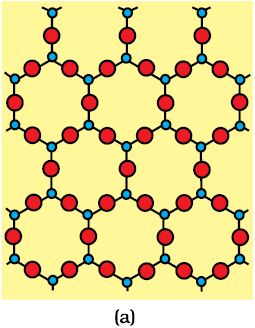 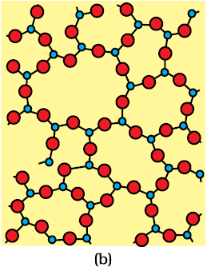
Fig. 1.1: Two dimensional structure of (a) quartz and (b) quartz glass
Crystalline solids have a sharp melting point. On the other hand, amorphous solids soften over a range of temperature and can be moulded and blown into various shapes. On heating they become crystalline at some temperature. Some glass objects from ancient civilisations are found to become milky in appearance because of some crystallisation. Like liquids, amorphous solids have a tendency to flow, though very slowly. Therefore, sometimes these are called pseudo solids or super cooled liquids. Glass panes fixed to windows or doors of old buildings are invariably found to be slightly thicker at the bottom than at the top. This is because the glass flows down very slowly and makes the bottom portion slightly thicker.
Crystalline solids are anisotropic in nature, that is, some of their physical properties like electrical resistance or refractive index show different values when measured along different directions in the same crystals. This arises from different arrangement of particles in different directions. This is illustrated in Fig. 1.2. Since the arrangement of particles is different along different directions, the value of same physical property is found to be different along each direction.
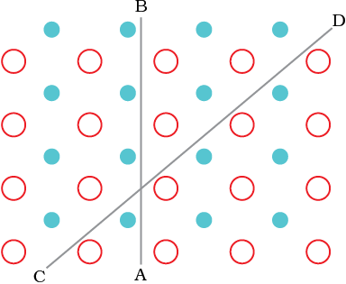
Fig. 1.2: Anisotropy in crystals is due to different arrangement of particles along different directions.
Amorphous solids on the other hand are isotropic in nature. It is because there is no long range order in them and arrangement is irregular along all the directions. Therefore, value of any physical property would be same along any direction. These differences are summarised in Table 1.1.
Table 1.1: Distinction between Crystalline and Amorphous Solids
|
Property
|
Crystalline solids
|
Amorphous solids
|
| Shape | Definite characteristic geometrical shape | Irregular shape |
| Melting point | Melt at a sharp and characteristic temperature | Gradually soften over a range of temperature |
| Cleavage property | When cut with a sharp edged tool, they split into two pieces and the newly generated surfaces are plain and smooth | When cut with a sharp edged tool, they cut into two pieces with irregular surfaces |
| Heat of fusion | They have a definite and characteristic heat of fusion | They do not have definite heat of fusion |
| Anisotropy | Anisotropic in nature | Isotropic in nature |
| Nature | True solids | Pseudo solids or super cooled liquids |
| Order in arrangement of constituent particles | Long range order | Pseudo solids or super cooled liquids Only short range order. |
Amorphous solids are useful materials. Glass, rubber and plastics find many applications in our daily lives. Amorphous silicon is one of the best photovoltaic material available for conversion of sunlight into electricity.
Intext Questions
1.1 Why are solids rigid?
1.2 Why do solids have a definite volume?
1.3 Classify the following as amorphous or crystalline solids: Polyurethane, naphthalene, benzoic acid, teflon, potassium nitrate, cellophane, polyvinyl chloride, fibre glass, copper.
1.4 Why is glass considered a super cooled liquid?
1.5 Refractive index of a solid is observed to have the same value along all directions. Comment on the nature of this solid. Would it show cleavage property?
1.3 Classification of Crystalline Solids
In Section 1.2, we have learnt about amorphous substances and that they have only short range order. However, most of the solid substances are crystalline in nature. For example, all the metallic elements like iron, copper and silver; non – metallic elements like sulphur, phosphorus and iodine and compounds like sodium chloride, zinc sulphide and naphthalene form crystalline solids.
Crystalline solids can be classified on the basis of nature of intermolecular forces operating in them into four categories viz., molecular, ionic, metallic and covalent solids. Let us now learn about these categories.
1.3.1 Molecular Solids
Molecules are the constituent particles of molecular solids. These are further sub divided into the following categories:
(i) Non polar Molecular Solids: They comprise of either atoms, for example, argon and helium or the molecules formed by non polar covalent bonds for example H2, Cl2 and I2. In these solids, the atoms or molecules are held by weak dispersion forces or London forces about which you have learnt in Class XI. These solids are soft and non-conductors of electricity. They have low melting points and are usually in liquid or gaseous state at room temperature and pressure.
(ii) Polar Molecular Solids: The molecules of substances like HCl, SO2, etc. are formed by polar covalent bonds. The molecules in such solids are held together by relatively stronger dipole-dipole interactions. These solids are soft and non-conductors of electricity. Their melting points are higher than those of non polar molecular solids yet most of these are gases or liquids under room temperature and pressure. Solid SO2 and solid NH3 are some examples of such solids.
(iii) Hydrogen Bonded Molecular Solids: The molecules of such solids contain polar covalent bonds between H and F, O or N atoms. Strong hydrogen bonding binds molecules of such solids like H2O (ice). They are non-conductors of electricity. Generally they are volatile liquids or soft solids under room temperature and pressure.
1.3.2 Ionic Solids
Ions are the constituent particles of ionic solids. Such solids are formed by the three dimensional arrangements of cations and anions bound by strong coulombic (electrostatic) forces. These solids are hard and brittle in nature. They have high melting and boiling points. Since the ions are not free to move about, they are electrical insulators in the solid state. However, in the molten state or when dissolved in water, the ions become free to move about and they conduct electricity.
1.3.3 Metallic Solids
Metals are orderly collection of positive ions surrounded by and held together by a sea of free electrons. These electrons are mobile and are evenly spread out throughout the crystal. Each metal atom contributes one or more electrons towards this sea of mobile electrons. These free and mobile electrons are responsible for high electrical and thermal conductivity of metals. When an electric field is applied, these electrons flow through the network of positive ions. Similarly, when heat is supplied to one portion of a metal, the thermal energy is uniformly spread throughout by free electrons. Another important characteristic of metals is their lustre and colour in certain cases. This is also due to the presence of free electrons in them. Metals are highly malleable and ductile.
1.3.4 Covalent or Network Solids
A wide variety of crystalline solids of non-metals result from the formation of covalent bonds between adjacent atoms throughout the crystal. They are also called giant molecules. Covalent bonds are strong and directional in nature, therefore atoms are held very strongly at their positions. Such solids are very hard and brittle. They have extremely high melting points and may even decompose before melting. They are insulators and do not conduct electricity. Diamond (Fig. 1.3) and silicon carbide are typical examples of such solids. Graphite is soft and a conductor of electricity. Its exceptional properties are due to its typical structure (Fig. 1.4). Carbon atoms are arranged in different layers and each atom is covalently bonded to three of its neighbouring atoms in the same layer. The fourth valence electron of each atom is present between different layers and is free to move about. These free electrons make graphite a good conductor of electricity. Different layers can slide one over the other. This makes graphite a soft solid and a good solid lubricant.
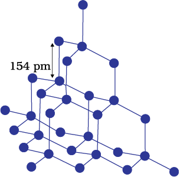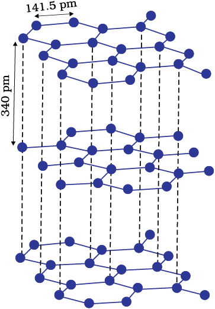
Fig. 1.3: Network structure Fig. 1.4: Structure of graphite of diamond
The different properties of the four types of solids are listed in Table 1.2.
Table 1.2: Different Types of Solids
|
Type of Solid
|
Constituent Praticles
|
|
Examples
|
Physical Nature
|
Electrical Conductivity
|
Melting Point
|
|
(1) Molecular solids
(ii) Polar (iii) Hydrogen Bonded |
Molecules
|
Dispersion or London forces Dipole-dipole interactions Hydrogen bonding |
Ar, CCl4, H2, I2, CO HCl, SO2 H2O (ice) |
Soft Soft Hard |
Insulator Insulator Insulator |
Very Low Low Low |
|
(2) Ionic solids
|
Ions
|
Coulombic or electrostatic
|
NaCl, MgO, ZnS, CaF2 |
Hard but Brittle
|
Insulators in Solid state but conductors in molten state and in aqueous solutions
|
High
|
|
(3) Metallic solids
|
Positive Ions in a sea of delocalised electrons
|
Metalic Binding
|
Fe, Cu, Ag
|
Hard but malleable
|
Conductors in solid state as well as in molten state
|
Fairly high
|
|
(4) Covalent or network solids
|
Atoms
|
Covalent bonding
|
SiO2 (quartz), SiC, C (diamond),
AlN, C graphite) |
Hard Soft |
Insulators Conductor(exception) |
Very high
|
Intext Questions
1.6 Classify the following solids in different categories based on the nature of intermolecular forces operating in them:
Potassium sulphate, tin, benzene, urea, ammonia, water, zinc sulphide, graphite, rubidium, argon, silicon carbide.
1.7 Solid A is a very hard electrical insulator in solid as well as in molten state and melts at extremely high temperature. What type of solid is it?
1.8 Ionic solids conduct electricity in molten state but not in solid state. Explain.
1.9 What type of solids are electrical conductors, malleable and ductile?
1.4 Crystal Lattices and Unit Cells
The main characteristic of crystalline solids is a regular and repeating pattern of constituent particles. If the three dimensional arrangement of constituent particles in a crystal is represented diagrammatically, in which each particle is depicted as a point, the arrangement is called crystal lattice. Thus, a regular three dimensional arrangement of points in space is called a crystal lattice. A portion of a crystal lattice is shown in Fig. 1.5.
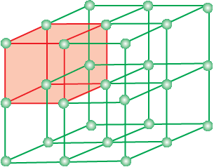
Fig. 1.5: A portion of a three dimensional cubic lattice and its unit cell.
There are only 14 possible three dimensional lattices. These are called Bravais Lattices (after the French mathematician who first described them). The following are the characteristics of a crystal lattice:
(a) Each point in a lattice is called lattice point or lattice site.
(b) Each point in a crystal lattice represents one constituent particle which may be an atom, a molecule (group of atoms) or an ion.
(c) Lattice points are joined by straight lines to bring out the geometry of the lattice. Unit cell is the smallest portion of a crystal lattice which, when repeated in different directions, generates the entire lattice.
A unit cell is characterised by:
(i) its dimensions along the three edges, a, b and c. These edges may or may not be mutually perpendicular.
(ii) angles between the edges, α (between b and c) β (between a and c) and γ (between a and b). Thus, a unit cell is characterised by six parameters, a, b, c, α, β and γ. These parameters of a typical unit cell are shown in Fig. 1.6.

Fig. 1.6: Illustration of parameters of a unit cell.
1.4.1 Primitive and Centred Unit Cells
Unit cells can be broadly divided into two categories, primitive and centred unit cells.
(a) Primitive Unit Cells
When constituent particles are present only on the corner positions of a unit cell, it is called as primitive unit cell.
(b) Centred Unit Cells
When a unit cell contains one or more constituent particles present at positions other than corners in addition to those at corners, it is called a centred unit cell. Centred unit cells are of three types:
(i) Body-Centred Unit Cells: Such a unit cell contains one constituent particle (atom, molecule or ion) at its body-centre besides the ones that are at its corners.
(ii) Face-Centred Unit Cells: Such a unit cell contains one constituent particle present at the centre of each face, besides the ones that are at its corners.
(iii) End-Centred Unit Cells: In such a unit cell, one constituent particle is present at the centre of any two opposite faces besides the ones present at its corners.
In all, there are seven types of primitive unit cells (Fig. 1.7).
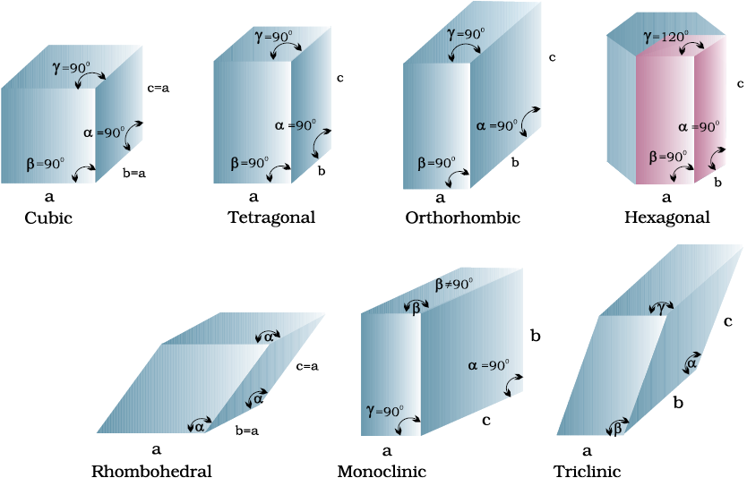
Fig. 1.7: Seven primitive unit cells in crystals
Their characteristics along with the centred unit cells they can form have been listed in Table 1.3.
Table 1.3: Seven Primitive Unit Cells and their Possible Variations as Centred Unit Cells
|
Crystal system
|
Possible Variations
|
Axial distances or edge lengths
|
Axial angles
|
Examples
|
| Cubic | Primitive, Body-centred, Face-centred | a=b=c | α = ß = γ= 90° | NaCl, Zinc blende, Cu |
| Tetragonal | Primitive, Body-centred | a = b ≠ c | α = ß = γ = 90° | White tin, SnO2, TiO2, CaSO4 |
| Orthorhombic | Primitive, Body-centred, Face-centred, End centred | a ≠b ≠ c | α = ß = γ = 90° | Rhombic sulphur, KNO3, BaSO4 |
| Hexagonal | Primitive | a = b ≠ c | α = ß =90° γ = 120° |
Graphite, ZnO,CdS, |
| Rhombohedral or Trigonal | Primitive | a = b = c | α = ß = γ ≠ 90° | Calcite (CaCO3), HgS (cinnabar) |
| Monoclinic | Primitive, End-centred | a ≠ b ≠c | α = γ =90° ß ≠ 90° |
Monoclinic sulphur, Na2SO4.10H2O |
| Triclinic | Primitive | a ≠ b ≠ c | α ≠ ß ≠ γ ≠ 90° |
K2Cr2O7, CuSO4. 5H2O, H3BO3 |
Unit Cells of 14 Types of Bravais Lattices

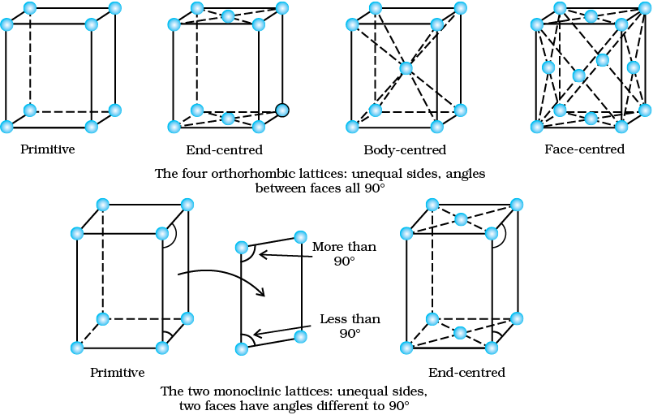
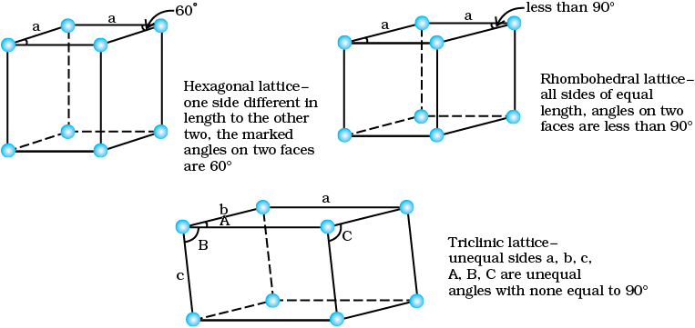
1.5 Number of Atoms in a Unit Cell
We know that any crystal lattice is made up of a very large number of unit cells and every lattice point is occupied by one constituent particle (atom, molecule or ion). Let us now work out what portion of each particle belongs to a particular unit cell.
We shall consider three types of cubic unit cells and for simplicity assume that the constituent particle is an atom.
1.5.1 Primitive Cubic Unit Cell
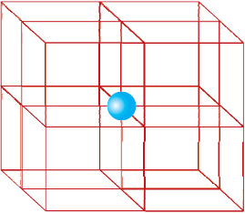
Fig. 1.8: In a simple cubic unit cell, each corner atom is shared between 8 unit cells.
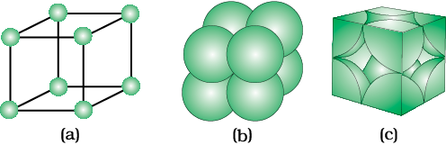
Fig. 1.9: A primitive cubic unit cell (a) open structure (b) space-filling structure (c) actual portions of atoms belonging to one unit cell.
1.5.2 Body-Centred Cubic Unit Cell
A body-centred cubic (bcc) unit cell has an atom at each of its corners and also one atom at its body centre. Fig. 1.10 depicts (a) open structure (b) space filling model and (c) the unit cell with portions of atoms actually belonging to it. It can be seen that the atom at the body centre wholly belongs to the unit cell in which it is present. Thus in a body-centered cubic (bcc) unit cell:
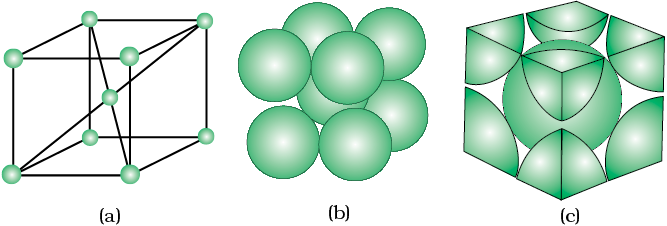
Fig. 1.10: A body-centred cubic unit cell (a) open structure (b) spacefilling structure (c) actual portions of atoms belonging to one unit cell.
(i) 8 corners ×  per corner atom 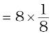 = 1 atom
per corner atom 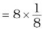 = 1 atom
(ii) 1 body centre atom = 1 × 1 = 1 atom
∴ Total number of atoms per unit cell = 2 atoms
1.5.3 Face- Centred Cubic Unit Cell
A face-centred cubic (fcc) unit cell contains atoms at all the corners and at the centre of all the faces of the cube. It can be seen in Fig. 1.11 that each atom located at the face-centre is shared between two adjacent unit cells and only 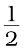of each atom belongs to a unit cell. Fig. 1.12 depicts (a) open structure (b) space-filling model and (c) the unit cell with portions of atoms actually belonging to it. Thus, in a face-centred cubic (fcc) unit cell:
(i) 8 corners atoms × 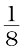 atom per unit cell  = 1 atom
= 1 atom
(ii) 6 face-centred atoms ×  atom per unit cell = 6 ×
atom per unit cell = 6 ×  = 3 atoms
= 3 atoms
∴ Total number of atoms per unit cell = 4 atoms
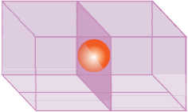
Fig. 1.11: An atom at face centre of unit cell is shared between 2 unit cells
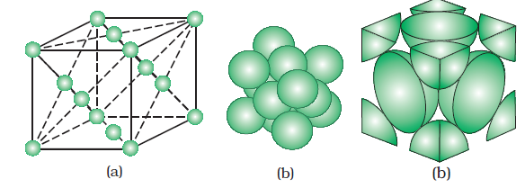
Fig 1.12: A face-centred cubic unit cell (a) open structure (b) space filling structure (c) actual portions of atoms belonging to one unit cell.
Intext Questions
1.6 Close packed structures
In solids, the constituent particles are close-packed, leaving the minimum vacant space. Let us consider the constituent particles as identical hard spheres and build up the three dimensional structure in three steps.
(a) Close Packing in One Dimension
There is only one way of arranging spheres in a one dimensional close packed structure, that is to arrange them in a row and touching each other (Fig. 1.13).

Fig. 1.13: Close packing of spheres in one dimension
In this arrangement, each sphere is in contact with two of its neighbours. The number of nearest neighbours of a particle is called its coordination number. Thus, in one dimensional close packed arrangement, the coordination number is 2.
(b) Close Packing in Two Dimensions
Two dimensional close packed structure can be generated by stacking (placing) the rows of close packed spheres. This can be done in two different ways.
(i) The second row may be placed in contact with the first one such that the spheres of the second row are exactly above those of the first row. The spheres of the two rows are aligned horizontally as well as vertically. If we call the first row as ‘A’ type row, the second row being exactly the same as the first one, is also of ‘A’ type. Similarly, we may place more rows to obtain AAA type of arrangement as shown in Fig. 1.14 (a).
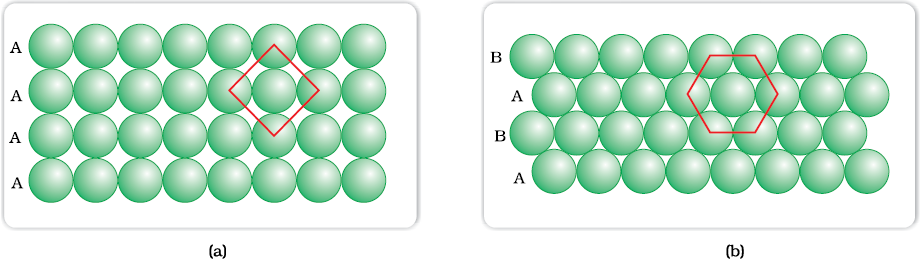
Fig. 1.14: (a) Square close packing (b) hexagonal close packing of spheres in two dimensions
In this arrangement, each sphere is in contact with four of its neighbours. Thus, the two dimensional coordination number is 4. Also, if the centres of these 4 immediate neighbouring spheres are joined, a square is formed. Hence this packing is called square close packing in two dimensions.
(ii) The second row may be placed above the first one in a staggered manner such that its spheres fit in the depressions of the first row. If the arrangement of spheres in the first row is called ‘A’ type, the one in the second row is different and may be called ‘B’ type. When the third row is placed adjacent to the second in staggered manner, its spheres are aligned with those of the first layer. Hence this layer is also of ‘A’ type. The spheres of similarly placed fourth row will be aligned with those of the second row (‘B’ type). Hence this arrangement is of ABAB type. In this arrangement there is less free space and this packing is more efficient than the square close packing. Each sphere is in contact with six of its neighbours and the two dimensional coordination number is 6. The centres of these six spheres are at the corners of a regular hexagon (Fig. 1.14b) hence this packing is called two dimensional hexagonal close-packing. It can be seen in Figure 1.14 (b) that in this layer there are some voids (empty spaces). These are triangular in shape. The triangular voids are of two different types. In one row, the apex of the triangles are pointing upwards and in the next layer downwards.
(c) Close Packing in Three Dimensions
All real structures are three dimensional structures. They can be obtained by stacking two dimensional layers one above the other. In the last Section, we discussed close packing in two dimensions which can be of two types; square close-packed and hexagonal close-packed. Let us see what types of three dimensional close packing can be obtained from these.
(i) Three dimensional close packing from two dimensional square close-packed layers: While placing the second square close-packed layer above the first we follow the same rule that was followed when one row was placed adjacent to the other. The second layer is placed over the first layer such that the spheres of the upper layer are exactly above those of the first layer. In this arrangement spheres of both the layers are perfectly aligned horizontally as well as vertically as shown in Fig. 1.15.
Similarly, we may place more layers one above the other. If the arrangement of spheres in the first layer is called ‘A’ type, all the layers have the same arrangement. Thus this lattice has AAA.... type pattern. The lattice thus generated is the simple cubic lattice, and its unit cell is the primitive cubic unit cell (See Fig. 1.9).
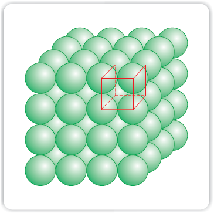
Fig. 1.15: Simple cubic lattice formed by A A A .... arrangement
(ii) Three dimensional close packing from two dimensional hexagonal close packed layers: Three dimensional close packed structure can be generated by placing layers one over the other.
(a) Placing second layer over the first layer
Let us take a two dimensional hexagonal close packed layer ‘A’ and place a similar layer above it such that the spheres of the second layer are placed in the depressions of the first layer. Since the spheres of the two layers are aligned differently, let us call the second layer as B. It can be observed from Fig. 1.16 that not all the triangular voids of the first layer are covered by the spheres of the second layer. This gives rise to different arrangements. Wherever a sphere of the second layer is above the void of the first layer (or vice versa) a tetrahedral void is formed. These voids are called tetrahedral voids because a tetrahedron is formed when the centres of these four spheres are joined. They have been marked as ‘T’ in Fig. 1.16. One such void has been shown separately in Fig. 1.17.

Fig. 1.16: A stack of two layers of close packed spheres and voids generated in them. T = Tetrahedral void; O = Octahedral void
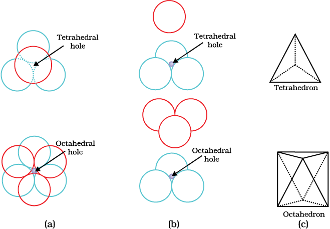
Fig 1.17 Tetrahedral and octahedral voids (a) top view (b) exploded side view and (c) geometrical shape of the void.
At other places, the triangular voids in the second layer are above the triangular voids in the first layer, and the triangular shapes of these do not overlap. One of them has the apex of the triangle pointing upwards and the other downwards. These voids have been marked as ‘O’ in Fig. 1.16. Such voids are surrounded by six spheres and are called octahedral voids. One such void has been shown separately in Fig. 1.17. The number of these two types of voids depend upon the number of close packed spheres.
Let the number of close packed spheres be N, then:
The number of octahedral voids generated = N
The number of tetrahedral voids generated = 2N
(b) Placing third layer over the second layer
When third layer is placed over the second, there are two possibilities.
(i) Covering Tetrahedral Voids: Tetrahedral voids of the second layer may be covered by the spheres of the third layer. In this case, the spheres of the third layer are exactly aligned with those of the first layer. Thus, the pattern of spheres is repeated in alternate layers. This pattern is often written as ABAB ....... pattern. This structure is called hexagonal close packed (hcp) structure (Fig. 1.18). This sort of arrangement of atoms is found in many metals like magnesium and zinc.
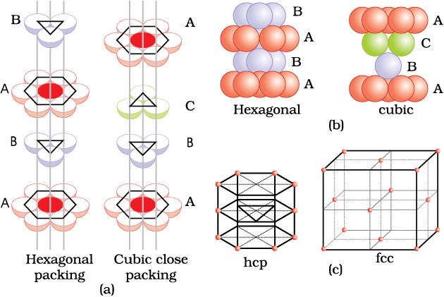
Fig. 1.18 (a) Hexagonal cubic close-packing exploded view showing stacking of layers of spheres (b) four layers stacked in each case and (c) geometry of packing.
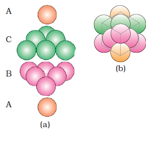
Fig. 1.19 (a) ABCABC... arrangement of layers when octahedral void is covered (b) fragment of structure formed by this arrangement resulting in cubic closed packed (ccp) or face centred cubic (fcc) structure.
(ii) Covering Octahedral Voids: The third layer may be placed above the second layer in a manner such that its spheres cover the octahedral voids. When placed in this manner, the spheres of the third layer are not aligned with those of either the first or the second layer. This arrangement is called ‘C’ type. Only when fourth layer is placed, its spheres are aligned with those of the first layer as shown in Figs. 1.18 and 1.19. This pattern of layers is often written as ABCABC ........... This structure is called cubic close packed (ccp) or face-centred cubic (fcc) structure. Metals such as copper and silver crystallise in this structure.
Both these types of close packing are highly efficient and 74% space in the crystal is filled. In either of them, each sphere is in contact with twelve spheres. Thus, the coordination number is 12 in either of these two structures.
1.6.1 Formula of a Compound and Number of Voids Filled
Earlier in the section, we have learnt that when particles are close-packed resulting in either ccp or hcp structure, two types of voids are generated. While the number of octahedral voids present in a lattice is equal to the number of close packed particles, the number of tetrahedral voids generated is twice this number. In ionic solids, the bigger ions (usually anions) form the close packed structure and the smaller ions (usually cations) occupy the voids. If the latter ion is small enough then tetrahedral voids are occupied, if bigger, then octahedral voids. Not all octahedral or tetrahedral voids are occupied. In a given compound, the fraction of octahedral or tetrahedral voids that are occupied, depends upon the chemical formula of the compound, as can be seen from the following examples.
Example 1.1
A compound is formed by two elements X and Y. Atoms of the element Y (as anions) make ccp and those of the element X (as cations) occupy all the octahedral voids. What is the formula of the compound?
Solution
The ccp lattice is formed by the element Y. The number of octahedral voids generated would be equal to the number of atoms of Y present in it. Since all the octahedral voids are occupied by the atoms of X, their number would also be equal to that of the element Y. Thus, the atoms of elements X and Y are present in equal numbers or 1:1 ratio. Therefore, the formula of the compound is XY.
Example 1.2
Atoms of element B form hcp lattice and those of the element A occupy 2/3rd of tetrahedral voids. What is the formula of the compound formed by the elements A and B?
Solution
The number of tetrahedral voids formed is equal to twice the number of atoms of element B and only 2/3rd of these are occupied by the atoms of element A. Hence the ratio of the number of atoms of A and B is 2 × (2/3):1 or 4:3 and the formula of the compound is A4B3.
Locating Tetrahedral and Octahedral Voids
We know that close packed structures have both tetrahedral and octahedral voids. Let us take ccp (or fcc) structure and locate these voids in it.
(a) Locating Tetrahedral Voids
Let us consider a unit cell of ccp or fcc lattice [Fig. 1(a)]. The unit cell is divided into eight small cubes.
Each small cube has atoms at alternate corners [Fig. 1(a)]. In all, each small cube has 4 atoms. When joined to each other, they make a regular tetrahedron. Thus, there is one tetrahedral void in each small cube and eight tetrahedral voids in total. Each of the eight small cubes have one void in one unit cell of ccp structure. We know that ccp structure has 4 atoms per unit cell. Thus, the number of tetrahedral voids is twice the number of atoms.
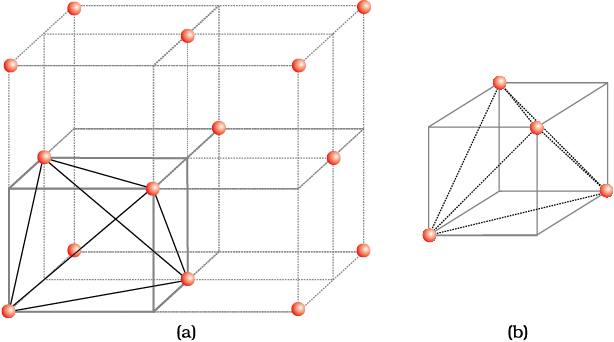
Fig. 1: (a) Eight tetrahedral voids per unit cell of ccp structure (b) one tetrahedral void showing the geometry.
(b) Locating Octahedral Voids
Let us again consider a unit cell of ccp or fcc lattice [Fig. 2(a)]. The body centre of the cube, C is not occupied but it is surrounded by six atoms on face centres. If these face centres are joined, an octahedron is generated. Thus, this unit cell has one octahedral void at the body centre of the cube.
Besides the body centre, there is one octahedral void at the centre of each of the 12 edges. [Fig. 2(b)]. It is surrounded by six atoms, four belonging to the same unit cell (2 on the corners and 2 on face centre) and two belonging to two adjacent unit cells. Since each edge of the cube is shared between four adjacent unit cells, so is the octahedral void located on it. Only th of each void belongs to a particular unit cell.
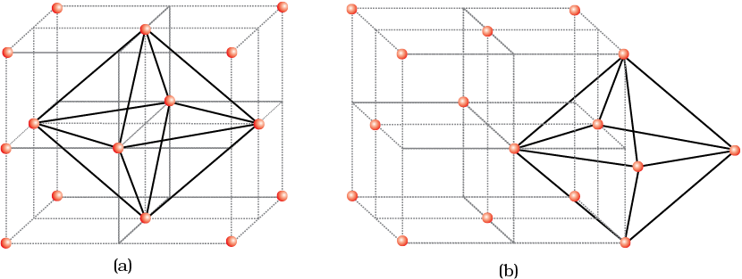
Fig. 2: Location of octahedral voids per unit cell of ccp or fcc lattice (a) at the body centre of the cube and (b) at the centre of each edge (only one such void is shown).
Thus in cubic close packed structure:
Octahedral void at the body-centre of the cube = 1
12 octahedral voids located at each edge and shared between four unit cells
= 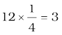
Therefore, total number of octahedral voids = 4
We know that in ccp structure, each unit cell has 4 atoms. Thus, the number of octahedral voids is equal to this number.
1.7 Packing Efficiency
In whatever way the constituent particles (atoms, molecules or ions) are packed, there is always some free space in the form of voids. Packing efficiency is the percentage of total space filled by the particles. Let us calculate the packing efficiency in different types of structures.
1.7.1 Packing Efficiency in hcp and ccp Structures
Both types of close packing (hcp and ccp) are equally efficient. Let us calculate the efficiency of packing in ccp structure. In Fig. 1.20 let the unit cell edge length be ‘a’ and face diagonal AC = b.
In 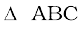
AC2 = b2 = BC2 + AB2
= a2+a2 = 2a2 or
b = 
If r is the radius of the sphere, we find
b = 4r = 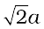
or a = 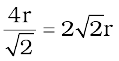
(we can also write, 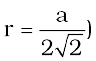
We know, that each unit cell in ccp structure, has effectively 4 spheres. Total volume of four spheres is equal to  and volume of the cube is a3 or 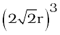.
and volume of the cube is a3 or 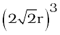.
Therefore,
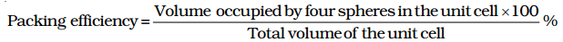
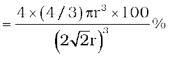


Fig. 1.20: Cubic close packing other sides are not provided with spheres for sake of clarity.
1.7.2 Efficiency of Packing in Body- Centred Cubic Structures
From Fig. 1.21, it is clear that the atom at the centre will be in touch with the other two atoms diagonally arranged.
In ∆ EFD,
b2 = a2 + a2 = 2a2
b = 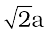
Now in ∆ AFD
c2 = a2 + b2 = a2 + 2a2 = 3a2
c = 
The length of the body diagonal c is equal to 4r, where r is the radius of the sphere (atom), as all the three spheres along the diagonal touch each other.
Therefore, 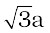 = 4r
a = 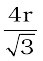
Also we can write, r = 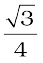a
In this type of structure, total number of atoms is 2 and their volume is 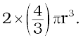
Volume of the cube, a3 will be equal to
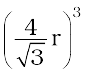or 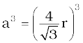.
Therefore,
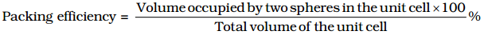
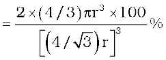
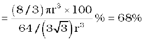
Fig. 1.21: Body-centred cubic unit cell (sphere along the body diagonal are shown with solid boundaries).
1.7.3 Packing Efficiency in Simple Cubic Lattice
In a simple cubic lattice the atoms are located only on the corners of the cube. The particles touch each other along the edge (Fig. 1.22).
Thus, the edge length or side of the cube ‘a’, and the radius of each particle, r are related as
a = 2r
The volume of the cubic unit cell = a3 = (2r)3 = 8r3
Since a simple cubic unit cell contains only 1 atom
The volume of the occupied space = 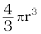
∴ Packing efficiency
= 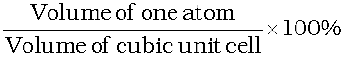
= 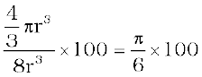
= 52.36% = 52.4 %
Thus, we may conclude that ccp and hcp structures have maximum packing efficiency.

Fig. 1.22 Simple cubic unit cell. The spheres are in contact with each other along the edge of the cube.
1.8 Calculations Involving Unit Cell Dimensions
From the unit cell dimensions, it is possible to calculate the volume of the unit cell. Knowing the density of the metal, we can calculate the mass of the atoms in the unit cell. The determination of the mass of a single atom gives an accurate method of determination of Avogadro constant. Suppose, edge length of a unit cell of a cubic crystal determined by X-ray diffraction is a, d the density of the solid substance and M the molar mass. In case of cubic crystal:
Volume of a unit cell = a3
Mass of the unit cell
= number of atoms in unit cell × mass of each atom = z × m
(Here z is the number of atoms present in one unit cell and m is the mass of a single atom)
Mass of an atom present in the unit cell:
m 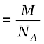(M is molar mass)
Therefore, density of the unit cell
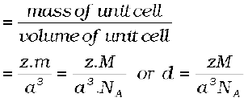
Remember, the density of the unit cell is the same as the density of the substance. The density of the solid can always be determined by other methods. Out of the five parameters (d, z M, a and NA), if any four are known, we can determine the fifth.
Example 1.3
An element has a body-centred cubic (bcc) structure with a cell edge of 288 pm. The density of the element is 7.2 g/cm3. How many atoms are present in 208 g of the element?
Solution
Volume of 208 g of the element
Example 1.4
X-ray diffraction studies show that copper crystallises in an fcc unit cell with cell edge of 3.608×10-8 cm. In a separate experiment, copper is determined to have a density of 8.92 g/cm3, calculate the atomic mass of copper
Solution
Example 1.5
Silver forms ccp lattice and X-ray studies of its crystals show that the edge length of its unit cell is 408.6 pm. Calculate the density of silver (Atomic mass = 107.9 u).
Solution
Since the lattice is ccp, the number of silver atoms per unit cell = z = 4
Molar mass of silver = 107.9 g mol –1
Edge length of unit cell = a = 408.6 pm = 408.6×10–12 m
Density,
Intext Questions
1.14 What is the two dimensional coordination number of a molecule in square close-packed layer?
1.16 A compound is formed by two elements M and N. The element N forms ccp and atoms of M occupy 1/3rd of tetrahedral voids. What is the formula of the compound?
1.9 Imperfections in Solids
Although crystalline solids have short range as well as long range order in the arrangement of their constituent particles, yet crystals are not perfect. Usually a solid consists of an aggregate of large number of small crystals. These small crystals have defects in them. This happens when crystallisation process occurs at fast or moderate rate. Single crystals are formed when the process of crystallisation occurs at extremely slow rate. Even these crystals are not free of defects. The defects are basically irregularities in the arrangement of constituent particles. Broadly speaking, the defects are of two types, namely, point defects and line defects. Point defects are the irregularities or deviations from ideal arrangement around a point or an atom in a crystalline substance, whereas the line defects are the irregularities or deviations from ideal arrangement in entire rows of lattice points. These irregularities are called crystal defects. We shall confine our discussion to point defects only.
1.9.1 Types of Point Defects
Point defects can be classified into three types : (i) stoichiometric defects (ii) impurity defects and (iii) non-stoichiometric defects.
(a) Stoichiometric Defects
These are the point defects that do not disturb the stoichiometry of the solid. They are also called intrinsic or thermodynamic defects. Basically these are of two types, vacancy defects and interstitial defects.
(i) Vacancy Defect: When some of the lattice sites are vacant, the crystal is said to have vacancy defect (Fig. 1.23). This results in decrease in density of the substance. This defect can also develop when a substance is heated.
(ii) Interstitial Defect: When some constituent particles (atoms or molecules) occupy an interstitial site, the crystal is said to have interstitial defect (Fig. 1.24). This defect increases the density of the substance.
Vacancy and interstitial defects as explained above can be shown by non-ionic solids. Ionic solids must always maintain electrical neutrality. Rather than simple vacancy or interstitial defects, they show these defects as Frenkel and Schottky defects.

Fig. 1.23: Vacancy defects

Fig. 1.24: Interstitial defects
(iii) Frenkel Defect: This defect is shown by ionic solids. The smaller ion (usually cation) is dislocated from its normal site to an interstitial site (Fig. 1.25). It creates a vacancy defect at its original site and an interstitial defect at its new location.
Frenkel defect is also called dislocation defect. It does not change the density of the solid. Frenkel defect is shown by ionic substance in which there is a large difference in the size of ions, for example, ZnS, AgCl, AgBr and AgI due to small size of Zn2+ and Ag+ ions.
(iv) Schottky Defect: It is basically a vacancy defect in ionic solids. In order to maintain electrical neutrality, the number of missing cations and anions are equal (Fig. 1.26).
Like simple vacancy defect, Schottky defect also decreases the density of the substance. Number of such defects in ionic solids is quite significant. For example, in NaCl there are approximately 106 Schottky pairs per cm3 at room temperature. In 1 cm3 there are about 1022 ions. Thus, there is one Schottky defect per 1016 ions. Schottky defect is shown by ionic substances in which the cation and anion are of almost similar sizes. For example, NaCl, KCl, CsCl and AgBr. It may be noted that AgBr shows both, Frenkel as well as Schottky defects.
(b) Impurity Defects
If molten NaCl containing a little amount of SrCl2 is crystallised, some of the sites of Na+ ions are occupied by Sr2+ (Fig.1.27). Each Sr2+ replaces two Na+ ions. It occupies the site of one ion and the other site remains vacant. The cationic vacancies thus produced are equal in number to that of Sr2+ ions. Another similar example is the solid solution of CdCl2 and AgCl.

Fig. 1.25: Frenkel defects Fig. 1.26: Schottky defects
Fig. 1.27: Introduction of cation vacancy in NaCl by substitution of Na+ by Sr2+
(c) Non-Stoichiometric Defects
The defects discussed so far do not disturb the stoichiometry of the crystalline substance. However, a large number of non-stoichiometric inorganic solids are known which contain the constituent elements in non-stoichiometric ratio due to defects in their crystal structures. These defects are of two types: (i) metal excess defect and (ii) metal deficiency defect.
(i) Metal Excess Defect
Now there is excess of zinc in the crystal and its formula becomes Zn1+xO. The excess Zn2+ ions move to interstitial sites and the electrons to neighbouring interstitial sites.
(ii) Metal Deficiency Defect
There are many solids which are difficult to prepare in the stoichiometric composition and contain less amount of the metal as compared to the stoichiometric proportion. A typical example of this type is FeO which is mostly found with a composition of Fe0.95O. It may actually range from Fe0.93O to Fe0.96O. In crystals of FeO some Fe2+ cations are missing and the loss of positive charge is made up by the presence of required number of Fe3+ ions.
Fig. 1.28: An F-centre in a crystal
1.10 Electrical Properties
Solids exhibit an amazing range of electrical conductivities, extending over 27 orders of magnitude ranging from 10–20 to 107 ohm–1 m–1. Solids can be classified into three types on the basis of their conductivities.
(i) Conductors: The solids with conductivities ranging between 104 to 107 ohm–1m–1 are called conductors. Metals have conductivities in the order of 107 ohm–1m–1 are good conductors.
(ii) Insulators : These are the solids with very low conductivities ranging between 10–20 to 10–10 ohm–1m–1.
(iii) Semiconductors : These are the solids with conductivities in the intermediate range from 10–6 to 104 ohm–1m–1.
1.10.1 Conduction of Electricity in Metals
A conductor may conduct electricity through movement of electrons or ions. Metallic conductors belong to the former category and electrolytes to the latter.
Metals conduct electricity in solid as well as molten state. The conductivity of metals depend upon the number of valence electrons available per atom. The atomic orbitals of metal atoms form molecular orbitals which are so close in energy to each other as to form a band. If this band is partially filled or it overlaps with a higher energy unoccupied conduction band, then electrons can flow easily under an applied electric field and the metal shows conductivity (Fig. 1.29 a).
If the gap between filled valence band and the next higher unoccupied band (conduction band) is large, electrons cannot jump to it and such a substance has very small conductivity and it behaves as an insulator (Fig. 1.29 b).
1.10.2 Conduction of Electricity in Semiconductors
In case of semiconductors, the gap between the valence band and conduction band is small (Fig. 1.29c). Therefore, some electrons may jump to conduction band and show some conductivity. Electrical conductivity of semiconductors increases with rise in temperature, since more electrons can jump to the conduction band. Substances like silicon and germanium show this type of behaviour and are called intrinsic semiconductors.
The conductivity of these intrinsic semiconductors is too low to be of practical use. Their conductivity is increased by adding an appropriate amount of suitable impurity. This process is called doping. Doping can be done with an impurity which is electron rich or electron deficient as compared to the intrinsic semiconductor silicon or germanium. Such impurities introduce electronic defects in them.
Fig. 1.29 Distinction among (a) metals (b) insulators and (c) semiconductors. In each case, an unshaded area represents a conduction band.
(a) Electron – rich impurities
Silicon and germanium belong to group 14 of the periodic table and have four valence electrons each. In their crystals each atom forms four covalent bonds with its neighbours (Fig. 1.30 a). When doped with a group 15 element like P or As, which contains five valence electrons, they occupy some of the lattice sites in silicon or germanium crystal (Fig. 1.30 b). Four out of five electrons are used in the formation of four covalent bonds with the four neighbouring silicon atoms. The fifth electron is extra and becomes delocalised. These delocalised electrons increase the conductivity of doped silicon (or germanium). Here the increase in conductivity is due to the negatively charged electron, hence silicon doped with electron-rich impurity is called n-type semiconductor.
(b) Electron – deficit impurities
Silicon or germanium can also be doped with a group 13 element like B, Al or Ga which contains only three valence electrons. The place where the fourth valence electron is missing is called electron hole or electron vacancy (Fig. 1.30 c). An electron from a neighbouring atom can come and fill the electron hole, but in doing so it would leave an electron hole at its original position. If it happens, it would appear as if the electron hole has moved in the direction opposite to that of the electron that filled it. Under the influence of electric field, electrons would move towards the positively charged plate through electronic holes, but it would appear as if electron holes are positively charged and are moving towards negatively charged plate. This type of semi conductors are called p-type semiconductors.

Fig. 1.30: Creation of n-type and p-type semiconductors by doping groups 13 and 15 elements.
Applications of n-type and p-type semiconductors
Various combinations of n-type and p-type semiconductors are used for making electronic components. Diode is a combination of n-type and p-type semiconductors and is used as a rectifier. Transistors are made by sandwiching a layer of one type of semiconductor between two layers of the other type of semiconductor. npn and pnp type of transistors are used to detect or amplify radio or audio signals. The solar cell is an efficient photo-diode used for conversion of light energy into electrical energy.
Germanium and silicon are group 14 elements and therefore, have a characteristic valence of four and form four bonds as in diamond. A large variety of solid state materials have been prepared by combination of groups 13 and 15 or 12 and 16 to simulate average valence of four as in Ge or Si. Typical compounds of groups 13 – 15 are InSb, AlP and GaAs. Gallium arsenide (GaAs) semiconductors have very fast response and have revolutionised the design of semiconductor devices. ZnS, CdS, CdSe and HgTe are examples of groups 12 – 16 compounds. In these compounds, the bonds are not perfectly covalent and the ionic character depends on the electronegativities of the two elements.
It is interesting to learn that transition metal oxides show marked differences in electrical properties. TiO, CrO2 and ReO3 behave like metals. Rhenium oxide, ReO3 is like metallic copper in its conductivity and appearance. Certain other oxides like VO, VO2, VO3 and TiO3 show metallic or insulating properties depending on temperature.
1.11 Magnetic Properties
Every substance has some magnetic properties associated with it. The origin of these properties lies in the electrons. Each electron in an atom behaves like a tiny magnet. Its magnetic moment originates from two types of motions (i) its orbital motion around the nucleus and (ii) its spin around its own axis (Fig. 1.31). Electron being a charged particle and undergoing these motions can be considered as a small loop of current which possesses a magnetic moment. Thus, each electron has a permanent spin and an orbital magnetic moment associated with it. Magnitude of this magnetic moment is very small and is measured in the unit called Bohr magneton, µB. It is equal to 9.27 × 10–24A m2.
On the basis of their magnetic properties, substances can be classified into five categories: (i) paramagnetic (ii) diamagnetic (iii) ferromagnetic (iv) antiferromagnetic and (v) ferrimagnetic.
(i) Paramagnetism: Paramagnetic substances are weakly attracted by a magnetic field. They are magnetised in a magnetic field in the same direction. They lose their magnetism in the absence of magnetic field. Paramagnetism is due to presence of one or more unpaired electrons which are attracted by the magnetic field. O2, Cu2+, Fe3+, Cr3+ are some examples of such substances.
Fig.1.31: Demonstration of the magnetic moment associated with (a) an orbiting electron and (b) a spinning electron.
(ii) Diamagnetism: Diamagnetic substances are weakly repelled by a magnetic field. H2O, NaCl and C6H6 are some examples of such substances. They are weakly magnetised in a magnetic field in opposite direction. Diamagnetism is shown by those substances in which all the electrons are paired and there are no unpaired electrons. Pairing of electrons cancels their magnetic moments and they lose their magnetic character.
(iii) Ferromagnetism: A few substances like iron, cobalt, nickel, gadolinium and CrO2 are attracted very strongly by a magnetic field. Such substances are called ferromagnetic substances. Besides strong attractions, these substances can be permanently magnetised. In solid state, the metal ions of ferromagnetic substances are grouped together into small regions called domains. Thus, each domain acts as a tiny magnet. In an unmagnetised piece of a ferromagnetic substance the domains are randomly oriented and their magnetic moments get cancelled. When the substance is placed in a magnetic field all the domains get oriented in the direction of the magnetic field (Fig. 1.32 a) and a strong magnetic effect is produced. This ordering of domains persist even when the magnetic field is removed and the ferromagnetic substance becomes a permanent magnet.
(iv) Antiferromagnetism: Substances like MnO showing anti-ferromagnetism have domain structure similar to ferromagnetic substance, but their domains are oppositely oriented and cancel out each other’s magnetic moment (Fig. 1.32 b).
(v) Ferrimagnetism: Ferrimagnetism is observed when the magnetic moments of the domains in the substance are aligned in parallel and anti-parallel directions in unequal numbers (Fig. 1.32 c). They are weakly attracted by magnetic field as compared to ferromagnetic substances. Fe3O4 (magnetite) and ferrites like MgFe2O4 and ZnFe2O4 are examples of such substances. These substances also lose ferrimagnetism on heating and become paramagnetic.
Fig 1.32: Schematic alignment of magnetic moments in (a) ferromagnetic (b) antiferromagnetic and (c) ferrimagnetic.
Intext Questions
1.19 What type of defect can arise when a solid is heated? Which physical property is affected by it and in what way?
Summary
Solids have definite mass, volume and shape. This is due to the fixed position of their constituent particles, short distances and strong interactions between them. In amorphous solids, the arrangement of constituent particles has only short range order and consequently they behave like super cooled liquids, do not have sharp melting points and are isotropic in nature. In crystalline solids there is long range order in the arrangement of their constituent particles. They have sharp melting points, are anisotropic in nature and their particles have characteristic shapes. Properties of crystalline solids depend upon the nature of interactions between their constituent particles. On this basis, they can be divided into four categories, namely: molecular, ionic, metallic and covalent solids. They differ widely in their properties.
The constituent particles in crystalline solids are arranged in a regular pattern which extends throughout the crystal. This arrangement is often depicted in the form of a three dimensional array of points which is called crystal lattice. Each lattice point gives the location of one particle in space. In all, fourteen different types of lattices are possible which are called Bravais lattices. Each lattice can be generated by repeating its small characteristic portion called unit cell. A unit cell is characterised by its edge lengths and three angles between these edges. Unit cells can be either primitive which have particles only at their corner positions or centred. The centred unit cells have additional particles at their body centre (bodycentred), at the centre of each face (face-centred) or at the centre of two opposite faces (end-centred). There are seven types of primitive unit cells. Taking centred unit cells also into account, there are fourteen types of unit cells in all, which result in fourteen Bravais lattices.
Exercises
1.1 Define the term 'amorphous'. Give a few examples of amorphous solids.
(iv) I2 (ix) Rb
(v) P4 (x) LiBr
1.7 How will you distinguish between the following pairs of terms:
1.9 Explain
1.11 Silver crystallises in fcc lattice. If edge length of the cell is 4.07 × 10–8 cm and density is 10.5 g cm–3, calculate the atomic mass of silver.
1.17 What is a semiconductor? Describe the two main types of semiconductors and contrast their conduction mechanism.
(i) Ge doped with In (ii) Si doped with B.
1.21 Gold (atomic radius = 0.144 nm) crystallises in a face-centred unit cell. What is the length of a side of the cell?
Answers to Some Intext Questions